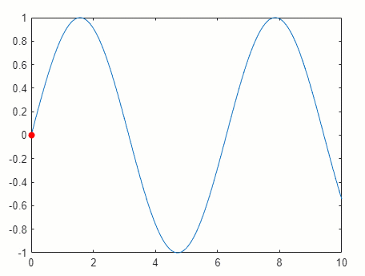
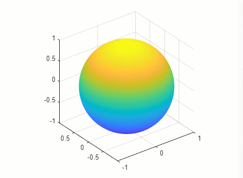
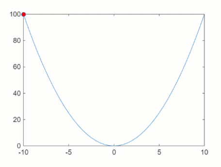
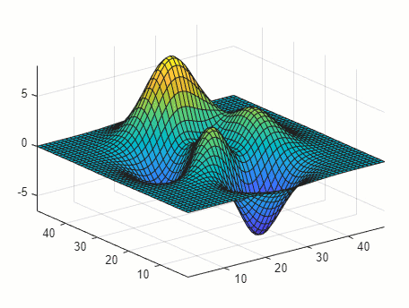

Animation Techniques
You can use four basic techniques to create animations in MATLAB®.
| Technique | Description | Example |
|---|---|---|
Update data in a loop. | Update the properties of a graphics object and display the
updates on the screen in a loop. This technique is useful for
creating animations when most of the plot remains the same. For
example, set the | |
Apply matrix transformations. | Apply transforms to objects. This technique is useful when
you want change the position and orientation of a group of
objects together. Group the graphics objects as children under a
transform object. Create the transform object using the
| |
Create an animated GIF file. | Update a figure and capture the frames of an animated GIF
using the | |
Create a movie. | Update a figure and capture the frames of a movie using the
|
Create Animation by Updating Data in Loop
Create an animation of a marker moving along a line.
Plot a sine wave. Then plot a marker and save it as the variable
mkrso you can access its properties later.Use the
xlim,ylim, andzlimfunctions to set the limits of each axis. Setting the limits disables the automatic axis limits calculation, which can cause flicker and affect the performance of the animation.Create a
for-loop that updates the coordinates of the marker. Change theXDataandYDataproperties of theScatterobject (mkr) at each iteration to move the marker along the line.Call the
drawnowcommand at the end each loop iteration to update the figure display.
x = linspace(0,10,500); y = sin(x); % Plot a line and a marker plot(x,y) hold on mkr = scatter(NaN,NaN,[],"red","filled"); hold off xlim([0 10]) ylim([-1 1]) zlim([-1 1]) % Move the marker along the line for i = 1:length(x) mkr.XData = x(i); mkr.YData = y(i); drawnow end

Create Animation Using Matrix Transformation
An efficient way to animate a plot is to apply a transformation matrix to one or more objects rather than iterating over all the points. The transformations you can use include translation, rotation, and scaling. You can also define your own transformation matrix.
Create an animation of a sphere rotating it 2π radians on an arbitrary axis.
Create the coordinates of a sphere using the
spherefunction.Create a
Transformobject namedgrp. Then plot the sphere as aSurfaceobject by calling thesurffunction and specifying the parent object asgrp.Display the axes grid lines and show the plot box in a 3-D view.
Create a
for-loop that steps through 300 equally spaced angle values from 0 to 2π, rotating the sphere by a small angle at every iteration. Use themakehgtformfunction to create the transformation matrix for each small angle of rotation. Then set theMatrixproperty ofgrpto perform the rotation.Call the
drawnowcommand at the end of each loop iteration to update the figure display.
% Create the coordinates of a sphere figure ax = axes; [x,y,z] = sphere(270); % Create transform object and plot the sphere grp = hgtransform(Parent=ax); s = surf(ax,x,y,z,z,Parent=grp,EdgeColor="none"); % Display grid lines and show the plot box in 3-D grid on view(3) axis vis3d axis tight manual % Rotate the sphere by small angles in a loop for ang = linspace(0,2*pi,300) tm = makehgtform("axisrotate",[1,1,1],ang); grp.Matrix = tm; drawnow end

Create Animated GIF File
Create an animated GIF file of a marker moving along a parabola.
Plot a parabola with one marker.
Create a
for-loop that changes the location of the marker at every iteration.At the end of each loop iteration, capture the figure as a frame of an animated GIF file using the
exportgraphicsfunction. When you specify theAppend=truename-value argument,exportgraphicscaptures the current frame and appends it to the specified GIF file.The resulting
parabola.giffile is saved to your current folder.
% Plot a parabola and a marker x = -10:0.5:10; y = x.^2; p = plot(x,y,"-o",MarkerFaceColor="red"); % Move the marker along the parabola and capture frames in a loop for i=1:41 p.MarkerIndices = i; exportgraphics(gca,"parabola.gif",Append=true) end

Create and Play Movie
Create a movie of a surface plot changing shape by using the getframe function in a loop. The
getframe function captures the movie frames in an array of
structures, and you use the movie function to play the movie.
Plot the coordinates of the
peaksfunction as a surface using thesurffunction and save theSurfaceobjects as the variables.Position the plot box tightly around surface and freeze the axes limits using the
axis tight manualcommand.Create an array of 40 structures named
Fto contain the animation frames.Create a
for-loop that changes the shape of the surface at every iteration.At the end of each loop iteration, update the figure using the
drawnowcommand and capture a movie frame using thegetframefunction.The resulting movie is saved as the structure array
F.
% Plot a surface Z = peaks; s = surf(Z); axis tight manual % Change the shape of the surface and capture frames loops = 40; F(loops) = struct('cdata',[],'colormap',[]); for j = 1:loops Zframe = sin(j*pi/10)*Z; s.ZData = Zframe; drawnow F(j) = getframe(gcf); end
Play the movie two times.
fig = figure; movie(fig,F,2)

See Also
Functions
hgtransform|makehgtform|exportgraphics|getframe|movie|writeVideo